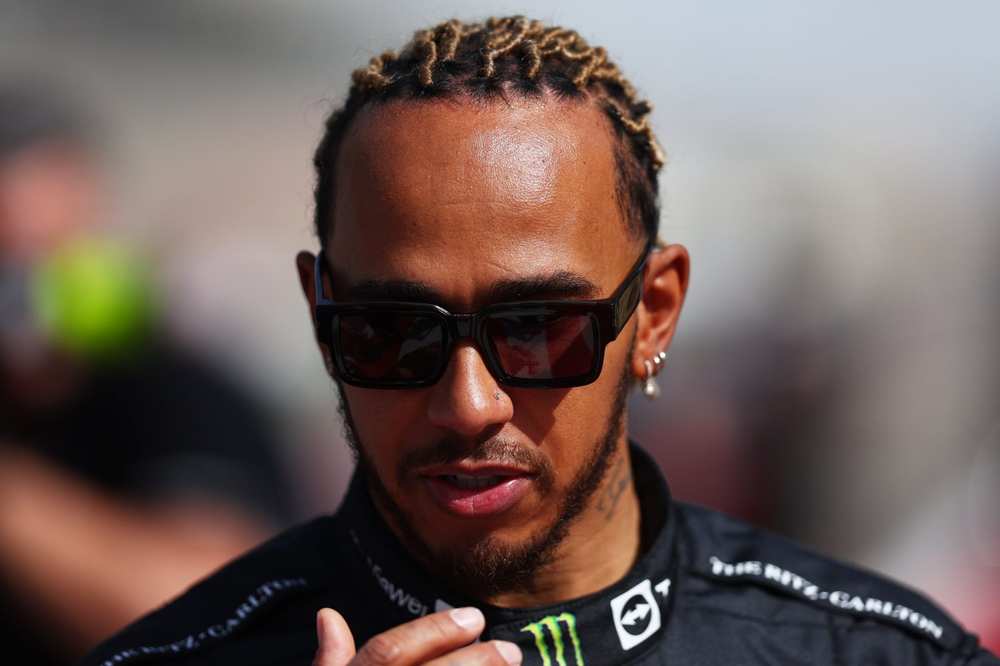

| Team | Mercedes |
|---|---|
| Country | United Kingdom |
| Podiums | 190 |
| Points | 4381.5 |
| Grand Prix entered | 308 |
| World Championships | 7 |
| Highest race finish | 1 (x103) |
| Highest grid position | 1 |
| Date of birth | 07/01/1985 |
| Place of birth | Stevenage, England |
Biography
‘Still I Rise’ – these are the words emblazoned across the back of Lewis Hamilton’s helmet and tattooed across his shoulders,
and ever since annihilating expectations with one of the greatest rookie performances in F1 history in 2007,
that’s literally all he’s done: risen to the top of the all-time pole positions list ahead of his hero Ayrton Senna,
surged into first place in the wins column surpassing the inimitable Michael Schumacher,
and then matched the legendary German’s seven world titles.
Is he the G.O.A.T? Few would deny that he’s in the conversation – and what’s more he’s got there his way,
twinning his relentless speed with a refusal to conform to stereotypes for how a racing driver should think, dress or behave.
Respect is hard earned in F1, but Hamilton – now Sir Lewis Hamilton to be precise – has it from every one of his peers.
Why? Because they know that whatever the track, whatever the conditions, whatever the situation,
when his visor goes down and the lights go out, it’s Hammertime.
Gallery
